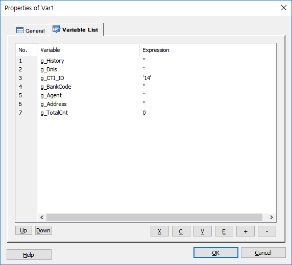
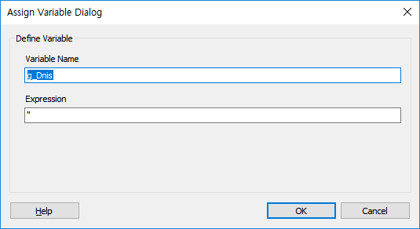

서비스 시나리오에서 사용되는 전역변수에 대한 정의를 합니다. Var Item은 모든 시나리오 파일에서 사용이 가능한데 Global.SSFX 에서 정의된 Var Item의 변수는 전역변수이고 나머지는 지역변수로 처리 합니다.
변수의 타입은 따로 지정 하지 않고 입력되는 값에 따라 타입이 결정됩니다. 숫자인 경우는 숫자를 입력하면 되고 문자인 경우는 작은 따옴표 안에 값을 입력 하면 됩니다.
Var아이템은 Global.ssfx에서는 1개 이상 아이템을 사용해도 빌드 시 처리가 됩니다. Global을 제외한 시나리오 에서는 한개의 아이템만 사용을 허용하며, Start 또는 WaitInbound, WaitOutbound아이템 다음에만 사용 가능 합니다.
ICON

PROPERTIES
 Variable List
Variable List

· No. 항목에서 변수 리스트의 카운트를 표시합니다.
Up Button : 선택한 리스트(변수)를 위로 이동 합니다.
Down Button : 선택한 리스트(변수)를 아래로 이동 합니다.
X Button : 선택한 리스트를 잘라냅니다.(Ctrl+X)
C Button : 선택한 리스트의 내용을 복사 합니다.(Ctrl+C)
V Button : 복사한 리스트의 내용을 붙여넣기 합니다.(Ctrl+V)
E Button : 변수 리스트에서 선택한 변수의 이름 및 초기값을 수정 합니다. 리스트에서 변수를 마우스 더블 클릭 해도 됩니다.(수정 창 팝업)
+ Button : 변수를 추가 합니다.(추가 창 팝업)
- Button : 선택된 변수를 삭제 합니다.

Variable Name : 변수의 이름을 정의 합니다.
- 변수를 배열로 지정한 경우는 변수이름[xx] 로 참조 합니다.( 예 : g_Class[0] )
Expression : 변수 초기값을 지정 합니다.
♣ 변수의 선언 예
일반 변수 : g_ANI
구조체 변수 : g_CA.LostAdd, g_CA.LostCardList, ...
배열 변수 : gs_System[1..5]
구조체의 배열 변수 : gs_ResponsePlay.out_field_list[1..50]
RELATED